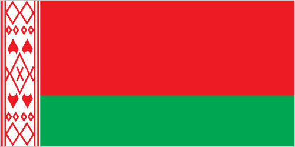
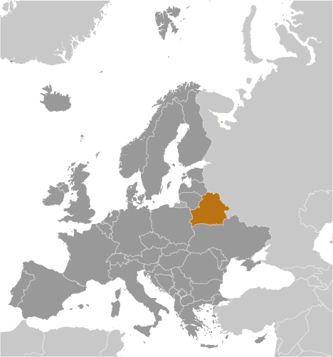
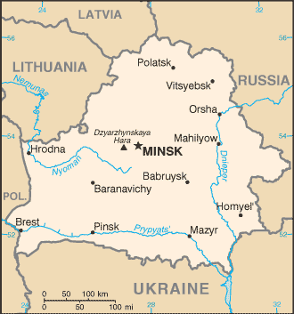

Europe :: BELARUS
Introduction :: BELARUS
-
After seven decades as a constituent republic of the USSR, Belarus attained its independence in 1991. It has retained closer political and economic ties to Russia than have any of the other former Soviet republics. Belarus and Russia signed a treaty on a two-state union on 8 December 1999 envisioning greater political and economic integration. Although Belarus agreed to a framework to carry out the accord, serious implementation has yet to take place. Since his election in July 1994 as the country's first and only directly elected president, Aleksandr LUKASHENKO has steadily consolidated his power through authoritarian means and a centralized economic system. Government restrictions on political and civil freedoms, freedom of speech and the press, peaceful assembly, and religion have remained in place.
Geography :: BELARUS
-
Eastern Europe, east of Poland53 00 N, 28 00 EEuropetotal: 207,600 sq kmland: 202,900 sq kmwater: 4,700 sq kmcountry comparison to the world: 87slightly less than twice the size of Kentucky; slightly smaller than Kansastotal: 3,642 kmborder countries (5): Latvia 161 km, Lithuania 640 km, Poland 418 km, Russia 1,312 km, Ukraine 1,111 km0 km (landlocked)none (landlocked)cold winters, cool and moist summers; transitional between continental and maritimegenerally flat with much marshlandmean elevation: 160 melevation extremes: lowest point: Nyoman River 90 mhighest point: Dzyarzhynskaya Hara 346 mtimber, peat deposits, small quantities of oil and natural gas, granite, dolomitic limestone, marl, chalk, sand, gravel, clayagricultural land: 43.7%arable land 27.2%; permanent crops 0.6%; permanent pasture 15.9%forest: 42.7%other: 13.6% (2011 est.)1,140 sq km (2012)a fairly even distribution throughout most of the country, with urban areas attracting larger and denser populationslarge tracts of marshy landsoil pollution from pesticide use; southern part of the country contaminated with fallout from 1986 nuclear reactor accident at Chornobyl' in northern Ukraineparty to: Air Pollution, Air Pollution-Nitrogen Oxides, Air Pollution-Sulfur 85, Biodiversity, Climate Change, Climate Change-Kyoto Protocol, Desertification, Endangered Species, Environmental Modification, Hazardous Wastes, Law of the Sea, Marine Dumping, Ozone Layer Protection, Ship Pollution, Wetlandssigned, but not ratified: none of the selected agreementslandlocked; glacial scouring accounts for the flatness of Belarusian terrain and for its 11,000 lakes
People and Society :: BELARUS
-
9,549,747 (July 2017 est.)country comparison to the world: 93noun: Belarusian(s)adjective: BelarusianBelarusian 83.7%, Russian 8.3%, Polish 3.1%, Ukrainian 1.7%, other 2.4%, unspecified 0.9% (2009 est.)Russian (official) 70.2%, Belarusian (official) 23.4%, other 3.1% (includes small Polish- and Ukrainian-speaking minorities), unspecified 3.3% (2009 est.)Orthodox 48.3%, Catholic 7.1%, other 3.5%, non-believers 41.1% (2011 est.)0-14 years: 15.78% (male 774,995/female 732,191)15-24 years: 10.29% (male 505,420/female 477,123)25-54 years: 44.76% (male 2,104,170/female 2,170,515)55-64 years: 14.21% (male 599,630/female 757,744)65 years and over: 14.95% (male 457,766/female 970,193) (2017 est.)total dependency ratio: 43.8youth dependency ratio: 23.2elderly dependency ratio: 20.6potential support ratio: 4.9 (2015 est.)total: 40 yearsmale: 37.1 yearsfemale: 43.1 years (2017 est.)country comparison to the world: 51-0.22% (2017 est.)country comparison to the world: 21110.3 births/1,000 population (2017 est.)country comparison to the world: 19113.2 deaths/1,000 population (2017 est.)country comparison to the world: 120.7 migrant(s)/1,000 population (2017 est.)country comparison to the world: 62a fairly even distribution throughout most of the country, with urban areas attracting larger and denser populationsurban population: 77.4% of total population (2017)rate of urbanization: -0.04% annual rate of change (2015-20 est.)MINSK (capital) 1.915 million (2015)at birth: 1.06 male(s)/female0-14 years: 1.06 male(s)/female15-24 years: 1.06 male(s)/female25-54 years: 0.97 male(s)/female55-64 years: 0.79 male(s)/female65 years and over: 0.46 male(s)/femaletotal population: 0.87 male(s)/female (2016 est.)25.7 years (2014 est.)4 deaths/100,000 live births (2015 est.)country comparison to the world: 176total: 3.6 deaths/1,000 live birthsmale: 4 deaths/1,000 live birthsfemale: 3.1 deaths/1,000 live births (2017 est.)country comparison to the world: 200total population: 73 yearsmale: 67.5 yearsfemale: 78.8 years (2017 est.)country comparison to the world: 1411.48 children born/woman (2017 est.)country comparison to the world: 19963.1% (2012)5.7% of GDP (2014)country comparison to the world: 1174.07 physicians/1,000 population (2014)11.3 beds/1,000 population (2011)improved:urban: 99.9% of populationrural: 99.1% of populationtotal: 99.7% of populationunimproved:urban: 0.1% of populationrural: 0.9% of populationtotal: 0.3% of population (2015 est.)improved:urban: 94.1% of populationrural: 95.2% of populationtotal: 94.3% of populationunimproved:urban: 5.9% of populationrural: 4.8% of populationtotal: 5.7% of population (2015 est.)0.4% (2016 est.)country comparison to the world: 7619,000 (2016 est.)country comparison to the world: 80<200 (2016 est.)24.5% (2016)country comparison to the world: 584.9% of GDP (2015)country comparison to the world: 71definition: age 15 and over can read and writetotal population: 99.7%male: 99.8%female: 99.7% (2015 est.)total: 16 yearsmale: 15 yearsfemale: 16 years (2015)total: 12.5%male: 12.4%female: 12.6% (2009 est.)country comparison to the world: 88
Government :: BELARUS
-
conventional long form: Republic of Belarusconventional short form: Belaruslocal long form: Respublika Byelarus'/Respublika Belarus'local short form: Byelarus'/Belarus'former: Belorussian (Byelorussian) Soviet Socialist Republicetymology: the name is a compound of the Belarusian words "bel" (white) and "Rus" (the Old East Slavic ethnic designation) to form the meaning White Rusian or White Ruthenianpresidential republic in name, although in fact a dictatorshipname: Minskgeographic coordinates: 53 54 N, 27 34 Etime difference: UTC+2 (7 hours ahead of Washington, DC, during Standard Time)6 provinces (voblastsi, singular - voblasts') and 1 municipality* (horad); Brest, Homyel' (Gomel'), Horad Minsk* (Minsk City), Hrodna (Grodno), Mahilyow (Mogilev), Minsk, Vitsyebsk (Vitebsk)note: administrative divisions have the same names as their administrative centers; Russian spelling provided for reference when different from Belarusian25 August 1991 (from the Soviet Union)Independence Day, 3 July (1944); note - 3 July 1944 was the date Minsk was liberated from German troops, 25 August 1991 was the date of independence from the Soviet Unionhistory: several previous; latest drafted between late 1991 and early 1994, signed 15 March 1994amendments: proposed by the president of the republic through petition to the National Assembly or by petition of least 150,000 eligible voters; approval required by at least two-thirds majority vote in both chambers or by simple majority of votes cast in a referendum (2016)civil law system; note - nearly all major codes (civil, civil procedure, criminal, criminal procedure, family, and labor) were revised and came into force in 1999 and 2000has not submitted an ICJ jurisdiction declaration; non-party state to the ICCtcitizenship by birth: nocitizenship by descent only: at least one parent must be a citizen of Belarusdual citizenship recognized: noresidency requirement for naturalization: 7 years18 years of age; universalchief of state: president Aleksandr LUKASHENKO (since 20 July 1994)head of government: prime minister Andrey KOBYAKOV (since 27 December 2014); first deputy prime minister Vasily MATYUSHEVSKIY (since 27 December 2014)cabinet: Council of Ministers appointed by the presidentelections/appointments: president directly elected by absolute majority popular vote in 2 rounds if needed for a 5-year term (no term limits); first election took place on 23 June and 10 July 1994; according to the 1994 constitution, the next election should have been held in 1999; however, Aleksandr LUKASHENKO extended his term to 2001 via a November 1996 referendum; subsequent election held on 9 September 2001; an October 2004 referendum ended presidential term limits and allowed the president to run and win in a third (19 March 2006), fourth (19 December 2010), and fifth election (11 October 2015); next election in 2020; prime minister and deputy prime ministers appointed by the president and approved by the National Assemblyelection results: Aleksandr LUKASHENKO reelected president; percent of vote - Aleksandr LUKASHENKO (independent) 83.5%, Tatsiana KARATKEVICH (Tell the Truth) 4.4%, Sergey GAYDUKEVICH (LDP) 3.3%, other 8.8%; note - election marred by electoral frauddescription: bicameral National Assembly or Natsionalnoye Sobraniye consists of the Council of the Republic or Sovet Respubliki (64 seats; 56 members indirectly elected by regional and Minsk city councils and 8 members appointed by the president; members serve 4-year terms) and the House of Representatives or Palata Predstaviteley (110 seats; members directly elected in single-seat constituencies by absolute majority vote in 2 rounds if needed; members serve 4-year terms); note - the US does not recognize the legitimacy of the National Assemblyelections: House of Representatives - last held on 11 September 2016 (next to be held in 2020); OSCE observers determined that the election was neither free nor impartial and that vote counting was problematic in a number of polling stations; pro-LUKASHENKO candidates won virtually every seat, with only the UCP member and one independent forming alternative representation in the House; international observers determined that the previous elections, on 28 September 2008 and 23 September 2012, also fell short of democratic standards, with pro-LUKASHENKO candidates winning every seatelection results: Council of the Republic - percent of vote by party - NA; seats by party - NA; House of Representatives - percent of vote by party - NA; seats by party - KPB 8, Belarusian Patriotic Party 3, Republican Party of Labor and Justice 3, LDP 1, UCP 1, independent 94highest court(s): Supreme Court (consists of the chairman and deputy chairman and organized into several specialized panels, including economic and military; number of judges set by the president of the republic and the court chairman); Constitutional Court (consists of 12 judges including a chairman and deputy chairman)judge selection and term of office: Supreme Court judges appointed by the president with the consent of the Council of the Republic; judges initially appointed for 5 years and evaluated for life appointment; Constitutional Court judges - 6 appointed by the president and 6 elected by the Council of the Republic; the presiding judge directly elected by the president and approved by the Council of the Republic; judges can serve for 11 years with an age limit of 70subordinate courts: provincial (including Minsk city) courts; first instance (district) courts; economic courts; military courtspro-government parties:Belarusian Agrarian Party or AP [Mikhail SHIMANSKIY]Belarusian Patriotic Party [Nikolai ULAKHOVICH]Belarusian Socialist Sporting Party [Vladimir ALEKSANDROVICH]Communist Party of Belarus or KPB [Georgi ATAMANOV]Liberal Democratic Party or LDP [Sergey GAYDUKEVICH]Republican Party [Vladimir BELOZOR]Republican Party of Labor and Justice [Vasiliy ZADNEPRYANIY]opposition parties:Belarusian Christian Democracy Party [Pavel SEVERINETS] (unregistered)Belarusian Party of the Green [Anastasiya DOROFEYEVA]Belarusian Party of the Left "Just World" [Sergey KALYAKIN]Belarusian Popular Front or BPF [Aleksey YANUKEVICH]Belarusian Social-Democratic Assembly [Stanislav SHUSHKEVICH]Belarusian Social Democratic Party ("Assembly") or BSDPH [Irina VESHTARD]Belarusian Social Democratic Party (People's Assembly) [Nikolay STATKEVICH] (unregistered)Christian Conservative Party or BPF [Zyanon PAZNYAK]United Civic Party or UCP [Anatoliy LEBEDKO]Assembly of Pro-Democratic NGOs [Sergey MATSKEVICH] (unregistered)Belarusian Association of Journalists [Andrei BASTUNETS]Belarusian Congress of Democratic Trade Unions or BRDP [Aleksandr YAROSHUK]Belarusian Helsinki Committee or BHC [Aleh HULAK]For Freedom Movement [Yuri GUBAREVICH]Malady Front (Young Front) [Zmitser DASHKEVICH] (unregistered)Vyasna (Spring) human rights center [Ales BELYATSKIY] (unregistered)Perspektiva [Anatoliy SHUMCHENKO] (small business association)"Tell the Truth" Movement [Tatsiana KARATKEVICH] (unregistered)Women's Independent Democratic Movement [Ludmila PETINA]BSEC (observer), CBSS (observer), CEI, CIS, CSTO, EAEC, EAEU, EAPC, EBRD, FAO, GCTU, IAEA, IBRD, ICAO, ICC (NGOs), ICRM, IDA, IFC, IFRCS, ILO, IMF, IMSO, Interpol, IOC, IOM, IPU, ISO, ITU, ITUC (NGOs), MIGA, NAM, NSG, OPCW, OSCE, PCA, PFP, SCO (dialogue member), UN, UNCTAD, UNESCO, UNIDO, UNIFIL, UNWTO, UPU, WCO, WFTU (NGOs), WHO, WIPO, WMO, WTO (observer), ZCchief of mission: Ambassador (vacant; recalled by Belarus in 2008); Charge d'Affaires Pavel SHIDLOVSKIY (since 23 April 2014)chancery: 1619 New Hampshire Avenue NW, Washington, DC 20009telephone: [1] (202) 986-1606FAX: [1] (202) 986-1805consulate(s) general: New Yorkchief of mission: Ambassador (vacant; left in 2008 upon insistence of Belarusian Government); Charge d'Affaires Robert RILEY (since 22 August 2016)embassy: 46 Starovilenskaya Street, Minsk 220002mailing address: Unit 7010 Box 100, DPO AE 09769telephone: [375] (17) 210-1283FAX: [375] (17) 234-7853red horizontal band (top) and green horizontal band one-half the width of the red band; a white vertical stripe on the hoist side bears Belarusian national ornamentation in red; the red band color recalls past struggles from oppression, the green band represents hope and the many forests of the countryno clearly defined current national symbol, the mounted knight known as Pahonia (the Chaser) is the traditional Belarusian symbol; national colors: green, red, whitename: "My, Bielarusy" (We Belarusians)lyrics/music: Mikhas KLIMKOVICH and Uladzimir KARYZNA/Nester SAKALOUSKInote: music adopted 1955, lyrics adopted 2002; after the fall of the Soviet Union, Belarus kept the music of its Soviet-era anthem but adopted new lyrics; also known as "Dziarzauny himn Respubliki Bielarus" (State Anthem of the Republic of Belarus)
Economy :: BELARUS
-
As part of the former Soviet Union, Belarus had a relatively well-developed, though aging industrial base; it retained this industrial base - which is now outdated, energy inefficient, and dependent on subsidized Russian energy and preferential access to Russian markets - following the breakup of the USSR. The country also has a broad agricultural base which is largely inefficient and dependent on government subsidies. After an initial burst of capitalist reform between 1991 and 1994, including privatization of smaller state enterprises and some service sector businesses, creation of institutions of private property, and development of entrepreneurship, Belarus' economic development greatly slowed. About 80% of all industry remains in state hands, and foreign investment has been hindered by a reluctance to welcome private investment absent joint ownership or affiliation with the state. A few businesses, which had been privatized after independence, were renationalized. State banks account for 75% of the banking sector.Economic output declined for several years following the collapse of the Soviet Union, but revived in the mid-2000s due to the boom in oil prices. Belarus has only small reserves of crude oil, though it imports most of its crude oil and natural gas from Russia at prices substantially below world market prices. Belarus then derives export revenue by refining Russian crude and selling it at market prices. In late 2006, Russia began a process of rolling back its subsidies on oil and gas exports to Belarus. Several times since, Russia and Belarus have had serious disagreements over the level and price of Russian energy supplies. At one point in 2010, Russia stopped the export of all subsidized oil to Belarus save for domestic needs before the two countries reached a deal to restart the export of discounted oil to Belarus. Beginning in early 2016, Russia claims Belarus began accumulating debt – reaching $740 million by April 2017 – for paying below an agreed price for Russian natural gas. Russia decided to reduce its export of crude oil as a result of the debt. In April 2017, Belarus agreed to pay its gas debt and Russia restored the flow of crude.New non-Russian foreign investment has been limited in recent years. In 2011, a financial crisis began, triggered by government-directed salary hikes, compounded by an increased cost in Russian energy inputs and an overvalued Belarusian ruble that lead to a nearly three-fold devaluation of the Belarusian ruble. In November 2011, Belarus agreed to sell to Russia its remaining shares of Beltransgaz, the Belarusian natural gas pipeline operator, in exchange for reduced prices for Russian natural gas. The situation stabilized in 2012, after Belarus received part of a $3 billion loan from the Russian-dominated Eurasian Economic Community Bailout Fund, a $1 billion loan from the Russian state-owned bank Sberbank, and $2.5 billion from the sale of Beltransgaz to Russian state-owned Gazprom; nevertheless, the Belarusian currency lost more than 60% of its value, as inflation reached new highs in 2011 and 2012, before calming in 2013. In December 2013, Russia announced a new loan for Belarus of up to $2 billion for 2014. Notwithstanding foreign assistance, the Belarusian economy continued to struggle under the weight of high external debt servicing payments and trade deficit. In mid-December 2014, structural economic shortcomings were aggravated by the devaluation of the Russian ruble, which triggered a near 40% devaluation of the Belarusian ruble.Since 2012, Belarus’s economy has suffered stagnation, which has led to widening productivity and income gaps between Belarus and neighboring countries. Since 2015, the Belarusian government has tightened its monetary policies (including allowing a more flexible exchange rate regime) and reduced subsidized government lending to state-owned industrial and agricultural enterprises, amid a drop in state budget revenues owing to falling global prices on key Belarusian export commodities - petroleum products and potash fertilizer. Belarus entered 2016 with a contracting economy and minimal hard currency reserves. GDP and foreign trade fell and unemployment rose, while inflation declined and hard currency reserves increased.$171.7 billion (2016 est.)$174.1 billion (2015 est.)$179.1 billion (2014 est.)note: data are in 2016 dollarscountry comparison to the world: 71$47.39 billion (2016 est.)-2.6% (2016 est.)-3.8% (2015 est.)1.7% (2014 est.)country comparison to the world: 208$18,100 (2016 est.)$18,600 (2015 est.)$19,400 (2014 est.)note: data are in 2016 dollarscountry comparison to the world: 9321.7% of GDP (2016 est.)25.8% of GDP (2015 est.)28.2% of GDP (2014 est.)country comparison to the world: 79household consumption: 54.6%government consumption: 16.1%investment in fixed capital: 23.9%investment in inventories: 5.4%exports of goods and services: 62.7%imports of goods and services: -62.7% (2016 est.)agriculture: 8.1%industry: 39.6%services: 52.3% (2016 est.)grain, potatoes, vegetables, sugar beets, flax; beef, milkmetal-cutting machine tools, tractors, trucks, earthmovers, motorcycles, synthetic fibers, fertilizer, textiles, refrigerators, washing machines and other household appliances-4% (2016 est.)country comparison to the world: 1844.381 million (2016 est.)country comparison to the world: 90agriculture: 9.7%industry: 23.4%services: 66.8% (2015 est.)1% (2016 est.)1% (2015 est.)note: official registered unemployed; large number of underemployed workerscountry comparison to the world: 45.7% (2016 est.)lowest 10%: 3.8%highest 10%: 21.9% (2008)26.5 (2011)21.7 (1998)country comparison to the world: 140revenues: $19.6 billionexpenditures: $18.95 billion (2016 est.)40.1% of GDP (2016 est.)country comparison to the world: 391.3% of GDP (2016 est.)country comparison to the world: 1847.5% of GDP (2016 est.)48.5% of GDP (2015 est.)country comparison to the world: 105calendar year11.8% (2016 est.)13.6% (2015 est.)country comparison to the world: 20714% (19 April 2017)15% (15 March 2017)country comparison to the world: 1114.4% (31 December 2016 est.)18.08% (31 December 2015 est.)country comparison to the world: 47$2.718 billion (31 December 2016 est.)$2.301 billion (31 December 2015 est.)country comparison to the world: 120$5.431 billion (31 December 2016 est.)$4.8 billion (31 December 2015 est.)country comparison to the world: 125$20.64 billion (31 December 2016 est.)$22.23 billion (31 December 2015 est.)country comparison to the world: 88$NA$-1.703 billion (2016 est.)$-1.843 billion (2015 est.)country comparison to the world: 146$22.98 billion (2016 est.)$26.16 billion (2015 est.)country comparison to the world: 67machinery and equipment, mineral products, chemicals, metals, textiles, foodstuffsRussia 46.3%, Ukraine 12.2%, UK 4.6%, Germany 4% (2016)$25.57 billion (2016 est.)$28.31 billion (2015 est.)country comparison to the world: 66mineral products, machinery and equipment, chemicals, foodstuffs, metalsRussia 55.5%, China 7.8%, Germany 4.9%, Poland 4.4% (2016)$4.927 billion (31 December 2016 est.)$4.176 billion (31 December 2015 est.)country comparison to the world: 94$37.74 billion (31 December 2016 est.)$37.88 billion (31 December 2015 est.)country comparison to the world: 73$6.929 billion (31 December 2016 est.)$7.241 billion (31 December 2015)country comparison to the world: 98$3.547 billion (31 December 2016 est.)$4.649 billion (31 December 2015)country comparison to the world: 77Belarusian rubles (BYB/BYR) per US dollar -2 (2016 est.)2 (2015 est.)15,926 (2014 est.)10,224.1 (2013 est.)8,336.9 (2012 est.)
Energy :: BELARUS
-
electrification - total population: 100% (2016)32.04 billion kWh (2015 est.)country comparison to the world: 6331.75 billion kWh (2015 est.)country comparison to the world: 613.482 billion kWh (2015 est.)country comparison to the world: 406.104 billion kWh (2015 est.)country comparison to the world: 3510.08 million kW (2015 est.)country comparison to the world: 6099.2% of total installed capacity (2015 est.)country comparison to the world: 310% of total installed capacity (2015 est.)country comparison to the world: 560.4% of total installed capacity (2015 est.)country comparison to the world: 1510.9% of total installed capacity (2015 est.)country comparison to the world: 14232,670 bbl/day (2016 est.)country comparison to the world: 6131,770 bbl/day (2014 est.)country comparison to the world: 48450,200 bbl/day (2014 est.)country comparison to the world: 22198 million bbl (1 January 2017 es)country comparison to the world: 59471,600 bbl/day (2014 est.)country comparison to the world: 36172,000 bbl/day (2015 est.)country comparison to the world: 62290,300 bbl/day (2014 est.)country comparison to the world: 272,387 bbl/day (2014 est.)country comparison to the world: 18430 million cu m (2015 est.)country comparison to the world: 8826.5 billion cu m (2015 est.)country comparison to the world: 400 cu m (2016 est.)country comparison to the world: 7317.3 billion cu m (2015 est.)country comparison to the world: 212.832 billion cu m (1 January 2017 es)country comparison to the world: 9970 million Mt (2013 est.)country comparison to the world: 50
Communications :: BELARUS
-
total subscriptions: 4,515,382subscriptions per 100 inhabitants: 47 (July 2016 est.)country comparison to the world: 35total: 11,439,866subscriptions per 100 inhabitants: 120 (July 2016 est.)country comparison to the world: 80general assessment: Belarus lags behind its neighbors in upgrading telecommunications infrastructure; modernization of the network progressing with over two-thirds of switching equipment now digitaldomestic: state-owned Beltelcom is the sole provider of fixed-line local and long distance service; fixed-line teledensity is improving although rural areas continue to be underserved; the country has three major GSM mobile-cellular networks; mobile-cellular teledensity now approaches 120 telephones per 100 personsinternational: country code - 375; Belarus is a member of the Trans-European Line (TEL), Trans-Asia-Europe (TAE) fiber-optic line, and has access to the Trans-Siberia Line (TSL); 3 fiber-optic segments provide connectivity to Latvia, Poland, Russia, and Ukraine; worldwide service is available to Belarus through this infrastructure; additional analog lines to Russia; Intelsat, Eutelsat, and Intersputnik earth stations (2017)7 state-controlled national TV channels; Polish and Russian TV broadcasts are available in some areas; state-run Belarusian Radio operates 5 national networks and an external service; Russian and Polish radio broadcasts are available (2017).bytotal: 6,805,786percent of population: 71.1% (July 2016 est.)country comparison to the world: 66
Transportation :: BELARUS
-
number of registered air carriers: 2inventory of registered aircraft operated by air carriers: 30annual passenger traffic on registered air carriers: 1,489,035annual freight traffic on registered air carriers: 1.807 million mt-km (2015)EW (2016)65 (2013)country comparison to the world: 75total: 33over 3,047 m: 12,438 to 3,047 m: 201,524 to 2,437 m: 4914 to 1,523 m: 1under 914 m: 7 (2017)total: 32over 3,047 m: 11,524 to 2,437 m: 1914 to 1,523 m: 2under 914 m: 28 (2013)1 (2013)gas 5,386 km; oil 1,589 km; refined products 1,730 km (2013)total: 5,528 kmbroad gauge: 5,503 km 1.520-m gauge (874 km electrified)standard gauge: 25 km 1.435-m gauge (2014)country comparison to the world: 34total: 86,392 kmpaved: 74,651 kmunpaved: 11,741 km (2010)country comparison to the world: 562,500 km (major rivers are the west-flowing Western Dvina and Neman Rivers and the south-flowing Dnepr River and its tributaries, the Berezina, Sozh, and Pripyat Rivers) (2011)country comparison to the world: 35river port(s): Mazyr (Prypyats')
Military and Security :: BELARUS
-
1.2% of GDP (2016)1.33% of GDP (2015)1.33% of GDP (2014)1.33% of GDP (2013)1.28% of GDP (2012)country comparison to the world: 82Belarus Armed Forces: Land Force, Air and Air Defense Force, Special Operations Force (2013)18-27 years of age for compulsory military or alternative service; conscript service obligation is 12-18 months, depending on academic qualifications, and 24-36 months for alternative service, depending on academic qualifications; 17 year olds are eligible to become cadets at military higher education institutes, where they are classified as military personnel (2016)
Transnational Issues :: BELARUS
-
boundary demarcated with Latvia and Lithuania; as a member state that forms part of the EU's external border, Poland has implemented strict Schengen border rules to restrict illegal immigration and trade along its border with Belarusrefugees (country of origin): 244,621 applicants for forms of legal stay other than asylum (Ukraine) (2017)stateless persons: 6,182 (2016)current situation: Belarus is a source, transit, and destination country for women, men, and children subjected to sex trafficking and forced labor; more victims are exploited within Belarus than abroad; Belarusians exploited abroad are primarily trafficked to Germany, Poland, Russian, and Turkey but also other European countries, the Middle East, Japan, Kazakhstan, and Mexico; Moldovans, Russians, Ukrainians, and Vietnamese are exploited in Belarus; state-sponsored forced labor is a continuing problem; students are forced to do farm labor without pay and military conscripts are forced to perform unpaid non-military work; the government has retained a decree forbidding workers in state-owned wood processing factories from leaving their jobs without their employers’ permissiontier rating: Tier 3 – Belarus does not fully comply with the minimum standards for the elimination of trafficking and was placed on Tier 3 after being on the Tier 2 Watch List for two consecutive years without making progress; government efforts to repeal state-sponsored forced labor policies and domestic trafficking were inadequate; no trafficking offenders were convicted in 2014, and the number of investigations progressively declined from 2005-14; efforts to protect trafficking victims remain insufficient, with no identification and referral mechanism in place; care facilities were not trafficking-specific and were poorly equipped, leading most victims to seek assistance from private shelters (2015)limited cultivation of opium poppy and cannabis, mostly for the domestic market; transshipment point for illicit drugs to and via Russia, and to the Baltics and Western Europe; a small and lightly regulated financial center; anti-money-laundering legislation does not meet international standards and was weakened further when know-your-customer requirements were curtailed in 2008; few investigations or prosecutions of money-laundering activities